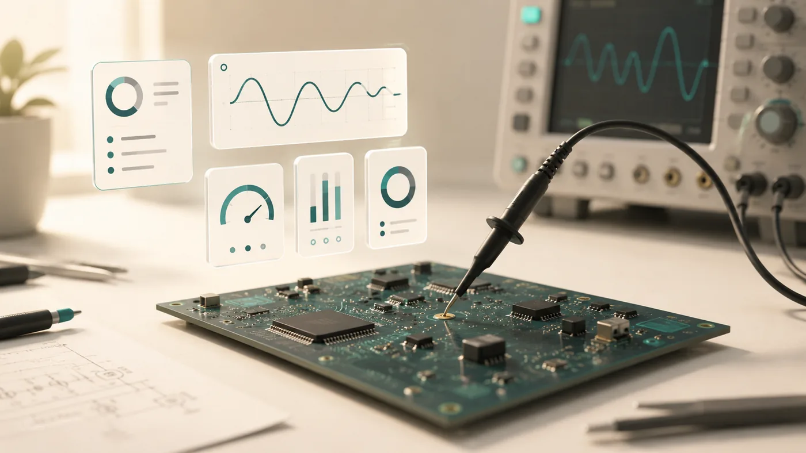
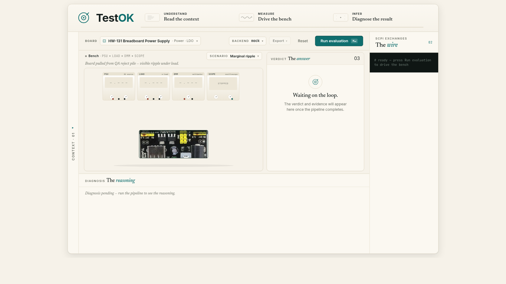
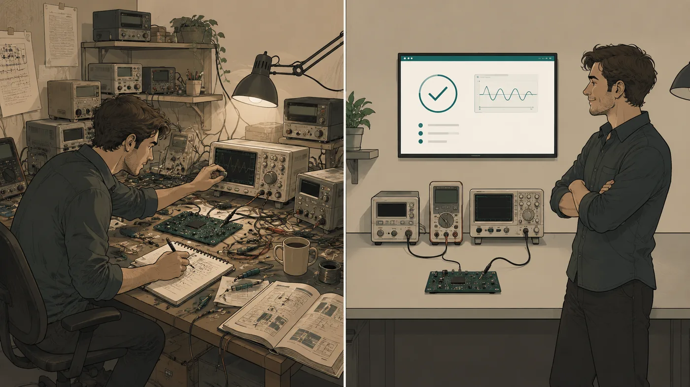
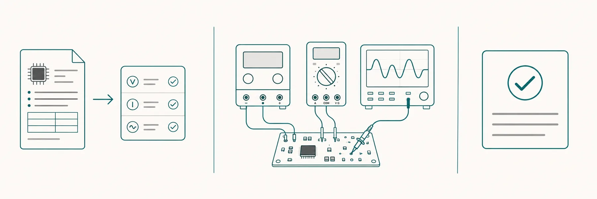

TestOK reads your board's design documents, drives the bench instruments, and tells you exactly what's wrong — closing the loop between design intent and bench reality.
testok-bench.vercel.app · no sign-in needed · free

Every run produces a closed-loop verdict that cites the actual readings. No black-box scores; every claim points back at a measurement you can re-check yourself.
High output ripple, DC regulation clean — output capacitor.
Output ripple measured TP3: 48.09 mV against a 15 mV limit (3.2× over spec). DC output voltage is within spec at every load point (TP1: 3.299 V, TP2: 3.302 V), so the pass device, the reference and the feedback loop are healthy. A ripple-only failure of this magnitude points to the output capacitor — most likely an under-valued or high-ESR COUT.
Bring-up is the slowest part of hardware. Engineers spend hours probing rails, cross-referencing the datasheet on one monitor and the oscilloscope on another, writing throwaway test scripts, and second-guessing marginal readings. The instruments capture data; they don't understand the design.
Bench bring-up should take an hour. It takes a week.

Before TestOK · After TestOK
Drop in a datasheet (or pick from the library). TestOK understands the spec, drives the instruments, and reasons about the result — citing the actual readings so the diagnosis is auditable.

PDF, Excel or markdown — the LLM extracts the test plan, the limits and the instruments each check needs.
PSU, electronic load, DMM, scope, spectrum analyser — over VISA, in the simulator, or any mix. Every SCPI exchange is logged.
Pass / fail per check, plus a structured diagnosis that cites the actual readings — and tells you the most likely root cause and next step.
Same loop, whether the bench is real instruments over VISA or the built-in simulator. The diagnosis quality doesn't change.
Upload the datasheet (PDF / Excel / CSV / Markdown). TestOK extracts the electrical-characteristics table and turns each row into an executable check — with limits, conditions, and which instrument it needs.
Drive real Keysight, Rigol or generic SCPI instruments through the same UI. No new framework to learn — the test plan you saw simulated runs unchanged on the live bench.
Every diagnosis paragraph cites the actual readings inline (TP1: 4.987 V). You see why the model said what it said. No black-box conclusions.
Export any run as a branded PDF, self-contained HTML, or JSON. Optional SCPI log + source-document appendix make the report self-contained for QA / compliance.
Upload a custom board's docs in one dialog — datasheet + BOM + test procedure + a real photo of the PCB. The bench artwork shows the photo so the instrument probes appear to land on the actual board.
Rule-based mock (offline, deterministic), local model via Ollama (on-prem, no cloud), or Anthropic Claude (the highest-quality free-form reasoning). Swap with one click.
Whether you'd like to pilot TestOK on a real board, partner on an instrument integration, or invest — the inbox is open.